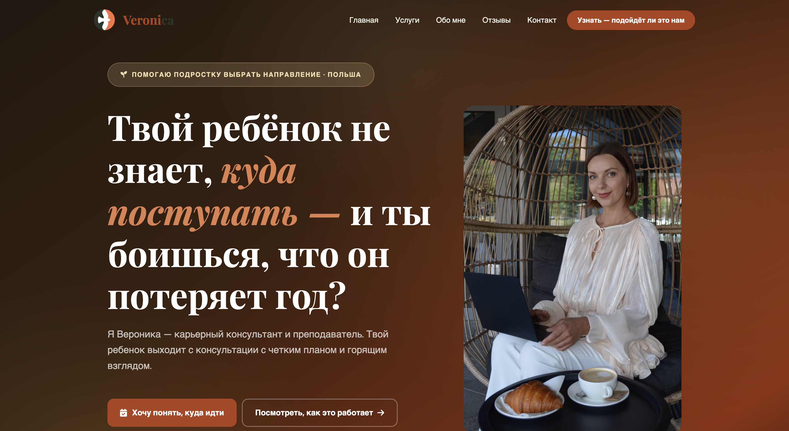

Etap 1
Rozmowa o marce
Najpierw przeszłyśmy przez to, do kogo mówi marka, jak klientka chce być odbierana i co ma poczuć osoba po wejściu na stronę.

O co chodziło
Klientka pomaga nastolatkom zrobić właściwy wybór zawodu i budować ścieżkę kariery. Ma dużą wiedzę, doświadczenie i jasną wizję pracy, ale brakowało miejsca, które pokazałoby to profesjonalnie i spójnie.
Potrzebowała strony, która:
pokaże jej ofertę.
zbuduje zaufanie.
uporządkuje komunikację.
będzie wyglądała tak, jak naprawdę czuje swoją markę.
Wyzwanie
Największym wyzwaniem nie było samo stworzenie strony, tylko przełożenie bardzo osobistej marki klientki na formę, która jednocześnie pozostanie elegancka, lekka wizualnie i autentyczna.
Dodatkowo klientka prowadzi intensywny biznes, więc proces musiał być zaprojektowany tak, by nie czuła przeciążenia.
Jak to zrobiłyśmy
Najpierw przeszłyśmy przez to, do kogo mówi marka, jak klientka chce być odbierana i co ma poczuć osoba po wejściu na stronę.
Rozbiłyśmy ofertę na czytelne elementy tak, aby odbiorca szybko rozumiał, czym klientka się zajmuje, dla kogo pracuje i jak można z nią współpracować.
Teksty zostały napisane tak, aby brzmiały naturalnie, nie były sprzedażowe na siłę, a jednocześnie prowadziły użytkownika do działania.
Strona została zaprojektowana jako estetyczna, kobieca, nowoczesna, spokojna i premium, tak żeby klientka mogła powiedzieć: "to naprawdę moja marka".
Pilnowałam kolejnych kroków, przypominałam o materiałach i prowadziłam projekt do końca, żeby klientka nie została z tym sama.
Efekt
Po wdrożeniu klientka otrzymała stronę, która:
Najważniejsze: klientka nie czuła, że "zamówiła stronę". Czuła, że przeszła proces z partnerem.
Co mówi klientka
Jeśli potrzebujesz nie tylko wykonawcy, ale prawdziwego partnera, który podpowie, pomoże i zrobi z tego coś wyjątkowego - szczerze polecam.
Co z tego wynika
Dobra strona internetowa nie polega tylko na estetyce. Największą wartością bywa to, że klientka nie musi wszystkiego wymyślać sama, czuje się prowadzona i finalnie dostaje przestrzeń, która realnie wspiera jej biznes.
Piękny design nie wystarczy, jeśli klientka po wejściu na stronę nadal nie rozumie, co dokładnie oferujesz i dlaczego właśnie Tobie ma zaufać.
Największą wartością jest uporządkowanie komunikacji: klientka nie wymyśla wszystkiego sama, czuje się prowadzona i krok po kroku dostaje stronę, która prowadzi odbiorcę do działania.
Finalnie strona nie jest tylko wizytówką. To narzędzie, które wspiera sprzedaż, buduje wiarygodność i daje miejsce, które możesz pokazywać z dumą.
Właśnie tak pracuję nad stronami marek osobistych.
Chcesz podobnie?
Zobaczymy, jak możemy stworzyć przestrzeń, która będzie naprawdę pracować dla Twojej marki.